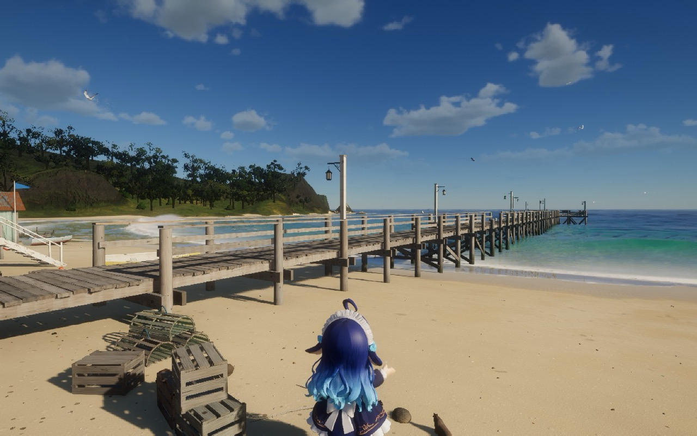

一座海岛钓鱼游戏
开船出海，去礁石和深水区钓鱼，在天黑前把渔获卖给乔。
按 R 拿出鱼竿。按住鼠标左键蓄力，松开抛竿：按得越久，抛得越远。
盯住浮漂。先轻点几下，然后被猛地拖入水中——就在那一刻点左键刺鱼。
中鱼后按住收线，但要让鱼线张力保持在绿色区域。鱼发力时松手，否则线会断。
能钓到什么，取决于钓点：浅滩、礁石、陡坡外的深水，以及一天中的时间。
码头边鱼摊的乔会收你的渔获。鱼按重量卖，越大的鱼越值钱。
船屋的玛塔卖升级：更结实的鱼线、更快的渔轮、更大的鱼舱、更多燃油和鱼探仪。
在船边按 E 上船，在舵轮前按 E 掌舵，再按一次可以离开舵轮在甲板走动。
按 I 打开保温箱和鱼类图鉴。装上玛塔卖的甲板灯，天黑后也能钓鱼。